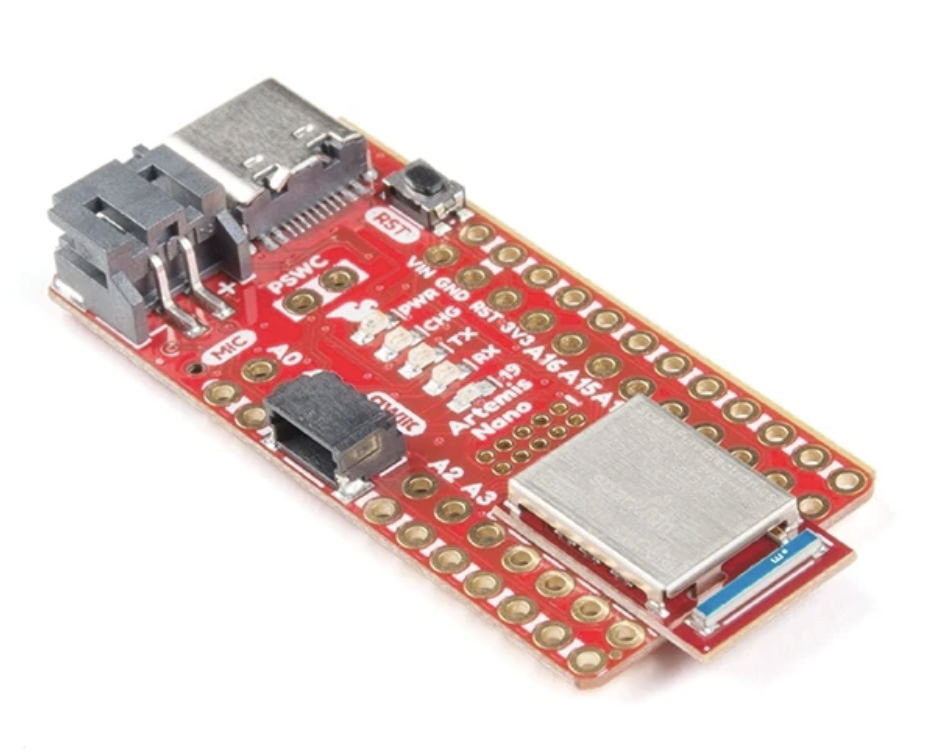
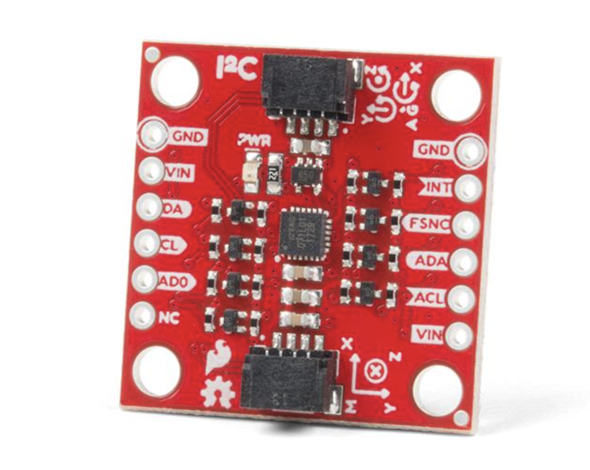
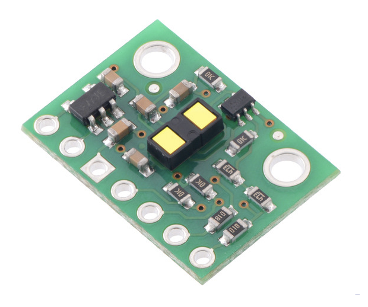
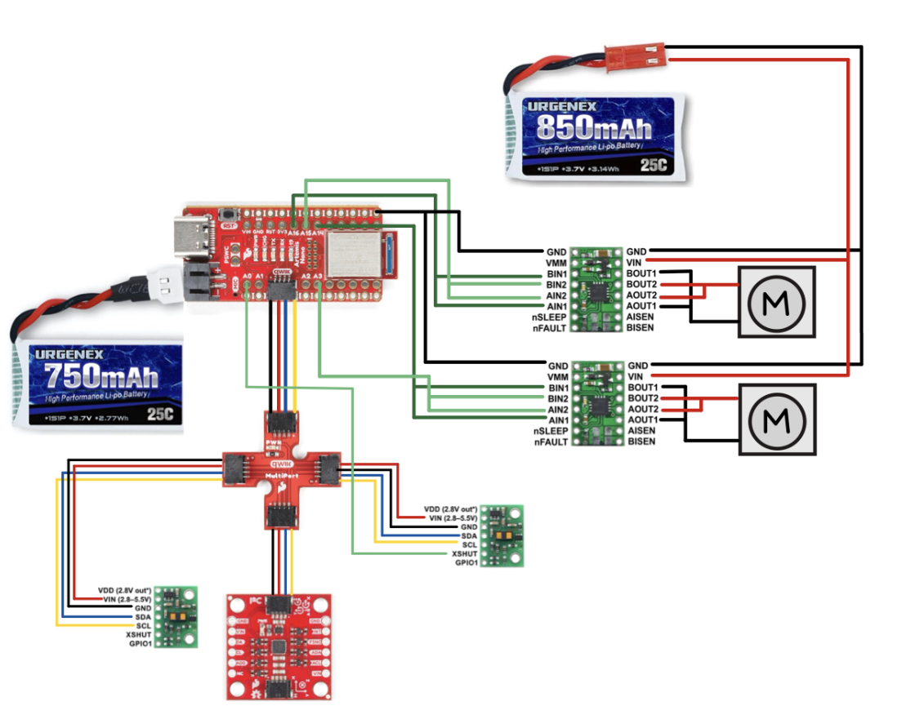
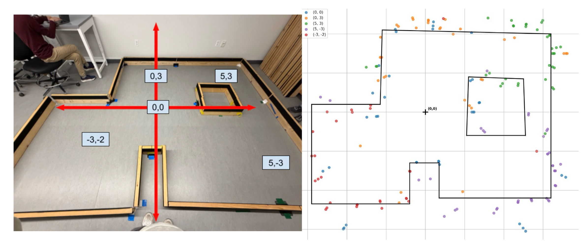
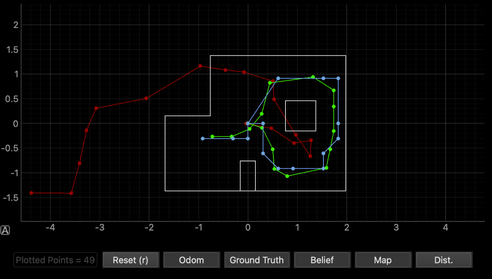
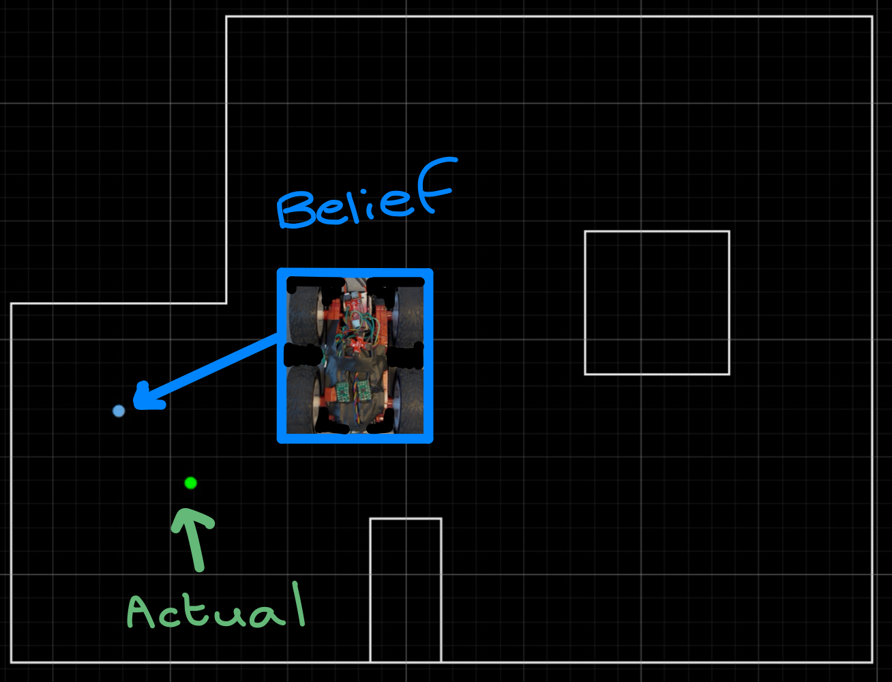

Lab 1: The Artemis Board and Bluetooth
Setup and configuration for connecting to board.

Setup and configuration for connecting to board.

Adding the IMU to the robot, running Artemis & sensors from a battery, and stunt recording.

Adding two ToF sensors to the robot, collecting sensor data.

Wiring dual motor drivers, generating PWM signals, and driving the car with pre-programmed open loop control.
Implement PID control of the robot and speed up data collection.
Get experience with orientation PID using the IMU, controlling yaw of the robot.
Implement a Kalman Filter to supplement the slowly sampled ToF values to get to the wall faster.
Use everything up until now to perform a cool stunt.

Map out a small room with the ToF sensor and orientation control.

Implement a Bayes Filter and observe it in a robot simulation environment.

Run the update step with real sensor values to localize robot in real environment.
Using open or closed-loop, have the robot drive around the world in a path.